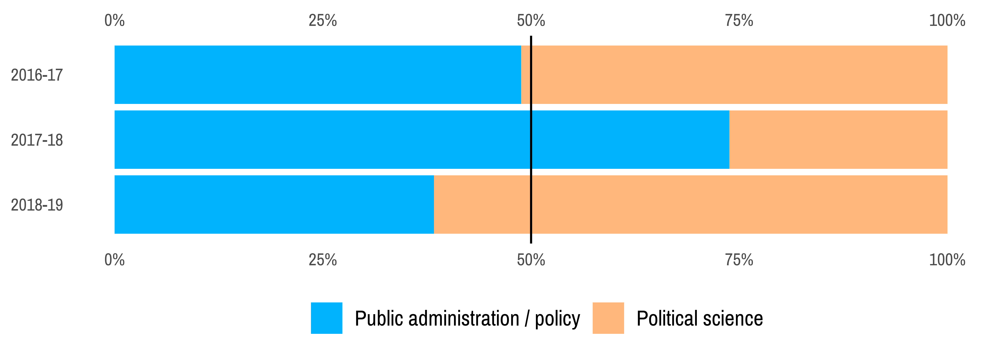
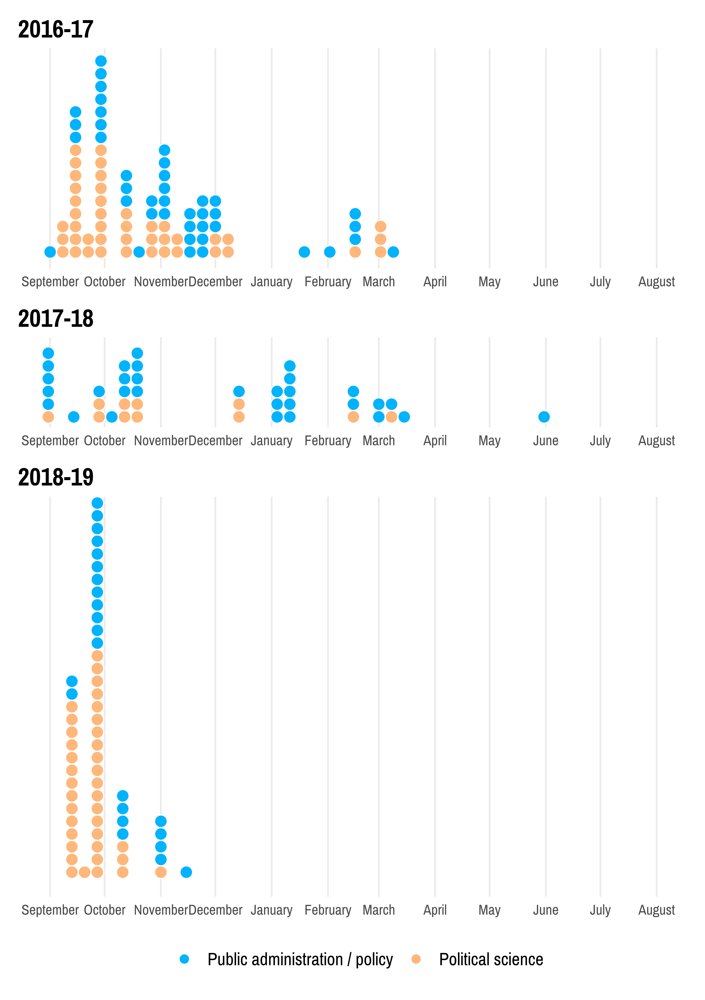
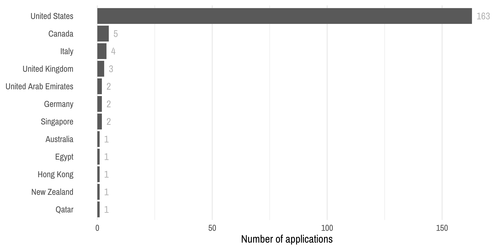
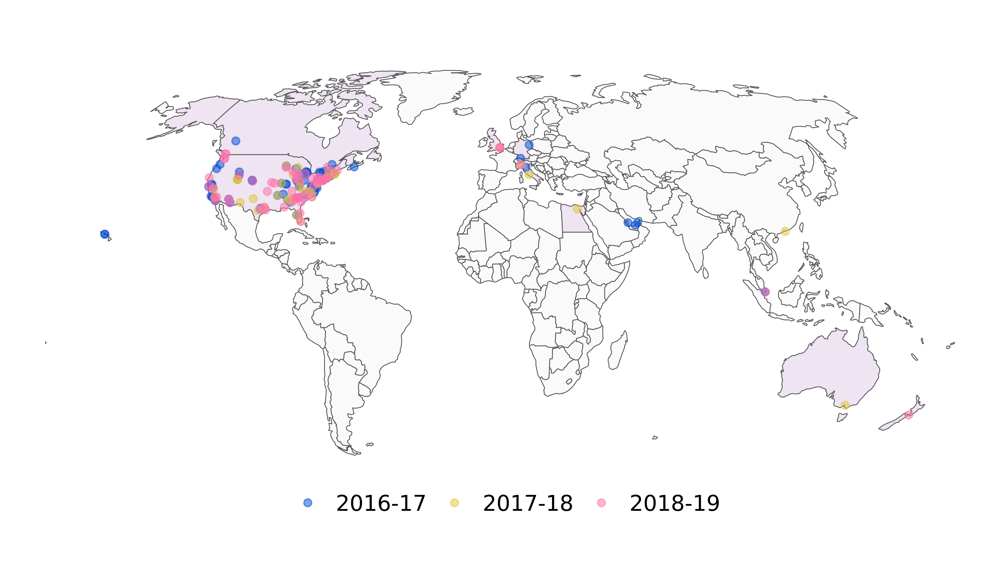
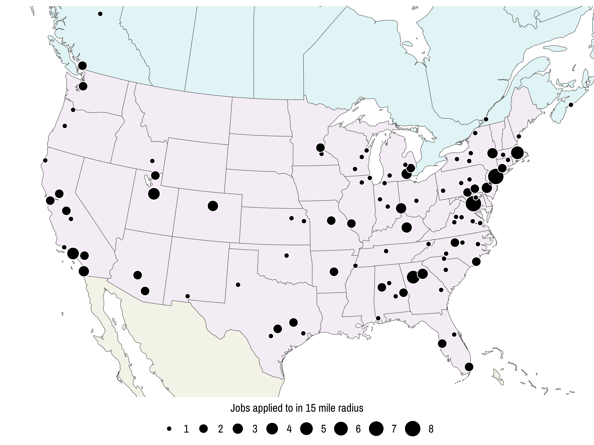

I am so beyond thrilled to announce that I’ll be joining the Andrew Young School of Policy Studies at Georgia State University in Fall 2019 as an assistant professor in the Department of Public Management and Policy. I’ll be teaching classes in statistics/data science, economics, and nonprofit management in beautiful downtown Atlanta, and we’ll be moving back to the South. I am so so excited about this! The Andrew Young School does amazing work in public policy, administration, and nonprofit management, and I’ll be working with phenomenal colleagues and students. I still can’t believe this is real.
Part of the reason I’m in shock is that for the past 2.5 years, I’ve been ripped apart and destroyed by the academic job market. This job market is a horrendous beast of a thing. It is soul-crushing and dream-shattering and a constant stream of rejection. While facing rejection is good and builds grit etc., etc., in reality it’s awful.
In an effort to stay On Brand™, here are a bunch of fancy graphs and numbers showing what it’s been like to apply for nearly 200 jobs since August 2016. Unlike many of my other blog posts, I haven’t included any of the code to generate these. That code is all available in a GitHub repository (see README.Rmd), along with the raw data that I’ve collected over the past few years (for the morbidly curious).
Application count and outcomes
Between August 31, 2016 and November 18, 2018, I applied for 186 tenure-track and non-tenure-track academic jobs at R1 schools, liberal arts colleges, and teaching-focused public universities. I was offered one two-year visiting assistant professorship at the Romney Institute of Public Service and Ethics at BYU (where I completed my MPA before getting my PhD), and one tenure-track assistant professorship at the Andrew Young School at Georgia State University.
That’s it. That’s a 98.9% rejection rate. Here’s what the weight of rejection looks like:
Not every one of these was an outright rejection. The typical academic search goes through a few stages:
Screen hundreds of initial applications
Skype or call 10-15 possible candidates
Fly out ≈3 candidates
Extend offer to 1 candidate
I made it through different stages of this process with many of the schools I applied to. In total, I had 27 Skype interviews and 9 flyouts over three years. This waffle plot divides up each of the applications by their final outcome (i.e. Skype, flyout, offer), discipline, and year. smh polisci.
I received my PhD in public policy, with an emphasis in political science and international relations. Many faculty at Duke emphasized that having a dual emphasis like this would be great for the academic job market—because I’m trained in both fields, I could theoretically fit comfortably in a traditional political science department or in a public policy or administration department/school. I applied to positions in both disciplines, but I was far less successful in getting any traction in the political science world (even though I attend and present research at ISA and APSA pretty regularly and I have published in the Journal of Politics ¯\_(ツ)_/¯).
My first year on the market, I was split 50/50 between public administration/policy jobs and political science jobs. During my second year, because I had very little response from political science I focused almost entirely on public admin/policy. During this most recent cycle, out of desperation I went back to applying to political science jobs in international relations and comparative politics. In the chart below, my proportion of public admin/policy jobs is actually the lowest this year, but that’s because (1) political science deadlines are way earlier, and (2) I essentially quit applying for jobs. This stopping was both because my mom died suddenly, which completely threw me off the rhythm of the market (i.e. I stopped applying completely until one school graciously e-mailed me to remind me to apply), and because I got an amazing job offer. I was on track for another 50/50 year, though.

Application timing
Applying for jobs is also a grueling process. Here’s what a typical job needs for a complete application:
CV
Cover letter tailored for the job, department, and university
Teaching statement and/or research statement and/or diversity statement (and for a few religious schools I applied to, a belief statement)
Teaching evaluations and/or sample syllabuses
Transcripts from graduate school
Writing sample(s)
3–5 letters of recommendation
Fortunately, once I wrote a version of each of these things, applying to individual schools didn’t take too terribly long. I spent August–September 2016 crafting my teaching/research/diversity statements and general cover letter, polishing my writing samples, and collecting letters of recommendation, and I edited and improved them over the whole 2.5-year process.
Writing cover letters generally took ≈45 minutes per school to scour each department’s website for relevant programs, centers, faculty, and classes. On some of the days where I sent out 5+ applications, I occasionally forgot to change the recipient address in the cover letter, or writing “I am applying for job X at university Y” while leaving “University Z” from the previous application. This was always horrifying, but I got Skype interviews out of a couple of those, so I think search committees tend to be forgiving about those kinds of mistakes.
This plot shows my pace of applying for jobs. Each dot is a job; each column is a week. The fall semester has been the most intense for sending out applications. In 2016–17, my record was 16 jobs in one week; in 2017–18 it was only 6 (since I severely cut back on political science jobs); and in 2018–19, I applied for 30 jobs in one week. With a rough average of 1 hour per application, that week was particularly intense.

So many dots.
Geography
Finally, another unique aspect of the academic job market is the fact that you rarely have control over where you end up. If you want to live in a specific state or city, you have to make sure a university there has an open position in your exact field (and then you have to compete against 300+ other applicants, so lolz to that). Friends, family, and neighbors would always suggest that I send my CV to nearby schools because “surely they’ll find a place for you—you’re smart!”. But that’s not how academia works.
I applied to positions in 12 different countries, with most in the United States.

Here’s a world map showing the locations of all these jobs across the three years. It’s really hard to see any patterns beyond the fact that I only applied for jobs in the Gulf in 2016–17, I guess?

Since the bulk of my applications went to schools in the US and Canada, here’s a more zoomed-in map. Because there are occasionally clusters of schools—particularly along the east coast—I put a 15-mile radius around each school, and if any of those buffer zones overlapped, I increased the point size to show how many schools are in that shared area. The code for this is actually pretty magical and ingenius—it’s worth it to check out the R code for this post just for those calculations :).
I applied to schools in 36 states + DC. I didn’t apply to any schools in Alaska, Delaware, Iowa, Louisiana, Mississippi, Montana, North Dakota, Nebraska, New Hampshire, Nevada, Rhode Island, South Dakota, Vermont, West Virginia, or Wyoming.

Here’s to being done with the job search! Off to Georgia State next year!
Citation
BibTeX citation:
@online{heiss2018,
author = {Heiss, Andrew},
title = {The Academic Job Search Finally Comes to an End},
date = {2018-12-17},
url = {https://www.andrewheiss.com/blog/2018/12/17/academic-job-market-visualized/},
doi = {10.59350/szk3h-v8674},
langid = {en}
}
---title: The academic job search finally comes to an enddate: 2018-12-17description: Explore 2.5 years of applying for academic jobs with fancy data visualizationcategories: - r - ggplot - dataviz - jobsdoi: 10.59350/szk3h-v8674citation: true---```{r setup, include=FALSE}knitr::opts_chunk$set(fig.align = "center", fig.retina = 3, collapse = TRUE, echo = FALSE, dpi = 300, dev = "png", dev.args = list(type = "cairo-png"))options(dplyr.summarise.inform = FALSE)```I am *so beyond thrilled* to announce that I'll be joining the [Andrew Young School of Policy Studies](https://aysps.gsu.edu/) at [Georgia State University](https://www.gsu.edu/) in Fall 2019 as an assistant professor in the [Department of Public Management and Policy](https://aysps.gsu.edu/public-management-policy/). I'll be teaching classes in statistics/data science, economics, and nonprofit management in beautiful downtown Atlanta, and we'll be moving back to the South. I am so so excited about this! The Andrew Young School does amazing work in public policy, administration, and nonprofit management, and I'll be working with phenomenal colleagues and students. I still can't believe this is real.Part of the reason I'm in shock is that for the past 2.5 years, I've been ripped apart and destroyed by the academic job market. This job market is a horrendous beast of a thing. It is soul-crushing and dream-shattering and a constant stream of rejection. While facing rejection [is good and builds grit etc., etc.](https://www.nytimes.com/2018/12/14/opinion/sunday/writers-rejections-resolutions.html), in reality it's awful.In an effort to stay On Brand™, here are a bunch of fancy graphs and numbers showing what it's been like to apply for nearly 200 jobs since August 2016. Unlike many of my other blog posts, I haven't included any of the code to generate these. [That code](https://github.com/andrewheiss/academic-job-market/blob/master/README.Rmd) is all available in a [GitHub repository](https://github.com/andrewheiss/academic-job-market) (see `README.Rmd`), along with the [raw data](https://github.com/andrewheiss/academic-job-market/blob/master/data/jobs_clean.csv) that I've collected over the past few years (for the morbidly curious).```{r load-libraries-data, warning=FALSE, message=FALSE}library(tidyverse)library(lubridate)# library(here)library(sf)library(waffle)library(ggstance)library(scales)library(countrycode)# library(mapview) # For interactive maps!library(units)library(patchwork)# Load jobs datajobs_clean <- read_csv("jobs_clean.csv") %>% mutate_at(vars(`Skype interview`, `Flyout`, contains("ffer")), list(bin = ~!is.na(.)))# Convert lat/long to sf-based geometryjobs_geo <- jobs_clean %>% mutate_at(vars(Lat, Long), list(~round(., digits = 3))) %>% st_as_sf(coords = c("Long", "Lat"), crs = 4326)# Maps from Natural Earthearth_lores <- read_sf("ne_110m_admin_0_countries/ne_110m_admin_0_countries.shp") %>% filter(ISO_A3 != "ATA")earth_medres <- read_sf("ne_50m_admin_0_countries/ne_50m_admin_0_countries.shp") %>% filter(ISO_A3 != "ATA")earth_medres_lakes <- read_sf("ne_50m_lakes/ne_50m_lakes.shp")great_lakes <- earth_medres_lakes %>% filter(name %in% c("Lake Superior", "Lake Michigan", "Lake Huron", "Lake Erie", "Lake Ontario", "Great Salt Lake"))earth_medres_states <- read_sf("ne_50m_admin_1_states_provinces/ne_50m_admin_1_states_provinces.shp")``````{r design-stuff}font_legend_stuff <- theme(plot.title = element_text(family = "ArchivoNarrow-Bold", face = "bold", size = rel(1.4), hjust = 0, margin = margin(b = 5)), plot.subtitle = element_text(family = "ArchivoNarrow-Regular", hjust = 0, margin = margin(t = 3, b = 3)), plot.caption = element_text(family = "ArchivoNarrow-Regular", hjust = 0.5), legend.text = element_text(family = "ArchivoNarrow-Regular"), legend.position = "bottom")theme_job_market <- function(base_size = 11, waffle = FALSE) { ret <- theme_minimal(base_size = base_size, base_family = "ArchivoNarrow-Regular") %+replace% font_legend_stuff if (waffle) { ret + theme(axis.text = element_blank(), panel.grid = element_blank()) } else { ret }}theme_job_market_map <- function(base_size = 11) { theme_void(base_size = base_size, base_family = "ArchivoNarrow-Regular") %+replace% font_legend_stuff}# Colors# I generated these with i want hue (http://tools.medialab.sciences-po.fr/iwanthue/)cols_disc <- list(`Political science` = "#ffb77b", `Public administration / policy` = "#01b3fd")cols_year <- list(`2016-17` = "#014dd3", `2017-18` = "#dfc641", `2018-19` = "#ff70ab")cols_outcome <- list(`Nothing` = "grey60", `Skype, no flyout` = "#7d2e00", `Flyout, no offer` = "#014dd3", `Visiting offer` = "#dfc641", `Tenure-track offer` = "#f66500")```## Application count and outcomes```{r job-details}total_jobs <- nrow(jobs_clean)rejections <- total_jobs - 2```Between August 31, 2016 and November 18, 2018, I applied for `r total_jobs` tenure-track and non-tenure-track academic jobs at R1 schools, liberal arts colleges, and teaching-focused public universities. I was offered one two-year visiting assistant professorship at the [Romney Institute of Public Service and Ethics](https://marriottschool.byu.edu/mpa/) at BYU (where I completed my MPA before getting my PhD), and one tenure-track assistant professorship at the Andrew Young School at Georgia State University. That's it. That's a `r percent(rejections / total_jobs, accuracy = 0.1)` rejection rate. Here's what the weight of rejection looks like:```{r plot-waffle-total, fig.width=7, fig.height=5}reject_waffle_parts <- c(`Rejection (184/186)` = rejections, `Visiting offer (1/186)` = 1, `Tenure track offer (1/186)` = 1)reject_waffle <- waffle(reject_waffle_parts, rows = 11, colors = c(cols_outcome$`Nothing`, cols_outcome$`Visiting offer`, cols_outcome$`Tenure-track offer`)) + labs(caption = "One box = one application") + theme_job_market() + theme(axis.text = element_blank())reject_waffle```Not every one of these was an outright rejection. The typical academic search goes through a few stages:1. Screen hundreds of initial applications2. Skype or call 10-15 possible candidates3. Fly out ≈3 candidates4. Extend offer to 1 candidateI made it through different stages of this process with many of the schools I applied to. In total, I had 27 Skype interviews and 9 flyouts over three years. This waffle plot divides up each of the applications by their final outcome (i.e. Skype, flyout, offer), discipline, and year. smh polisci.```{r all-waffles, cache=TRUE}# Summarize job success by cycle and disciplinediscipline_success <- jobs_clean %>% group_by(Cycle, Discipline) %>% summarize(skype = sum(`Skype interview_bin`), fly = sum(`Flyout_bin`), visiting_offer = sum(`Visiting offer_bin`), tt_offer = sum(`Offer_bin`), total = n()) %>% mutate(`Tenure-track offer` = tt_offer, `Visiting offer` = visiting_offer, `Flyout, no offer` = fly - tt_offer - visiting_offer, `Skype, no flyout` = skype - `Flyout, no offer`, Nothing = total - `Skype, no flyout`)df_waffle <- discipline_success %>% group_by(Cycle, Discipline) %>% nest() %>% mutate(counts = data %>% map(~ gather(.x, names, vals, Nothing, `Skype, no flyout`, `Flyout, no offer`, `Visiting offer`, `Tenure-track offer`) %>% select(names, vals) )) %>% unnest(counts) %>% mutate(names = fct_inorder(names)) %>% ungroup()# Shortcut for filtering specific cycles and disciplines for use with waffle()get_cycle_disc <- function(df, cycle, discipline) { df %>% filter(Cycle == cycle, Discipline == discipline) %>% select(names, vals) %>% pull(vals, name = names)}waffle_ps_2016 <- waffle(get_cycle_disc(df_waffle, "2016-17", "Political science"), rows = 3, colors = unlist(cols_outcome)) + guides(fill = "none") + labs(title = "2016-17", subtitle = "Political science (43)") + theme_job_market(waffle = TRUE)waffle_pa_2016 <- waffle(get_cycle_disc(df_waffle, "2016-17", "Public administration / policy"), rows = 3, pad = 1, colors = unlist(cols_outcome)) + guides(fill = "none") + labs(subtitle = "Public administration and policy (41)") + theme_job_market(waffle = TRUE)waffle_ps_2017 <- waffle(get_cycle_disc(df_waffle, "2017-18", "Political science"), rows = 1, pad = 4, colors = unlist(cols_outcome)) + guides(fill = "none") + labs(title = "2017-18", subtitle = "Political science (11)") + theme_job_market(waffle = TRUE)waffle_pa_2017 <- waffle(get_cycle_disc(df_waffle, "2017-18", "Public administration / policy"), rows = 3, pad = 4, colors = unlist(cols_outcome)) + guides(fill = "none") + labs(subtitle = "Public administration and policy (31)") + theme_job_market(waffle = TRUE)waffle_ps_2018 <- waffle(get_cycle_disc(df_waffle, "2018-19", "Political science"), rows = 3, pad = 2, colors = unlist(cols_outcome)) + guides(fill = "none") + labs(title = "2018-19", subtitle = "Political science (37)") + theme_job_market(waffle = TRUE)waffle_pa_2018 <- waffle(get_cycle_disc(df_waffle, "2018-19", "Public administration / policy"), rows = 2, pad = 3, colors = unlist(cols_outcome), legend_pos = "center") + labs(subtitle = "Public administration and policy (23)", caption = "One box = one application") + guides(fill = guide_legend(nrow = 1)) + theme_job_market(waffle = TRUE)``````{r iron-waffles, fig.width=7, fig.height=10, cache=TRUE}iron(waffle_ps_2016, waffle_pa_2016, waffle_ps_2017, waffle_pa_2017, waffle_ps_2018, waffle_pa_2018)```I received my PhD in public policy, with an emphasis in political science and international relations. Many faculty at Duke emphasized that having a dual emphasis like this would be great for the academic job market—because I'm trained in both fields, I could theoretically fit comfortably in a traditional political science department or in a public policy or administration department/school. I applied to positions in both disciplines, but I was *far* less successful in getting any traction in the political science world (even though I attend and present research at ISA and APSA pretty regularly and [I have published in the Journal of Politics](https://www.andrewheiss.com/research/heiss-kelley-2017/) ¯\\\_(ツ)\_/¯). My first year on the market, I was split 50/50 between public administration/policy jobs and political science jobs. During my second year, because I had very little response from political science I focused almost entirely on public admin/policy. During this most recent cycle, out of desperation I went back to applying to political science jobs in international relations and comparative politics. In the chart below, my proportion of public admin/policy jobs is actually the lowest this year, but that's because (1) political science deadlines are way earlier, and (2) I essentially quit applying for jobs. This stopping was both because [my mom died suddenly](https://www.heissatopia.com/2018/11/thursday-night-and-grandmas-passing.html), which completely threw me off the rhythm of the market (i.e. I stopped applying completely until one school graciously e-mailed me to remind me to apply), and because I got an amazing job offer. I was on track for another 50/50 year, though.```{r discipline-props, fig.width=7, fig.height=2.5, cache=TRUE}discipline_props <- discipline_success %>% group_by(Cycle) %>% mutate(cycle_total = sum(total)) %>% group_by(Cycle, Discipline) %>% mutate(prop_discipline = total / cycle_total)plot_disc_props <- ggplot(discipline_props, aes(y = fct_rev(Cycle), x = prop_discipline, fill = Discipline)) + geom_barh(stat = "identity") + geom_vline(xintercept = 0.5) + scale_x_continuous(labels = percent_format(accuracy = 1), sec.axis = dup_axis()) + scale_fill_manual(values = unlist(cols_disc)) + guides(fill = guide_legend(reverse = TRUE, title = NULL)) + labs(x = NULL, y = NULL) + theme_job_market() + theme(panel.grid = element_blank())plot_disc_props```## Application timingApplying for jobs is also a grueling process. Here's what a typical job needs for a complete application:- CV- Cover letter tailored for the job, department, and university- Teaching statement and/or research statement and/or diversity statement (and for a few religious schools I applied to, a belief statement)- Teaching evaluations and/or sample syllabuses- Transcripts from graduate school- Writing sample(s)- 3–5 letters of recommendationFortunately, once I wrote a version of each of these things, applying to individual schools didn't take too terribly long. I spent August–September 2016 crafting my teaching/research/diversity statements and general cover letter, polishing my writing samples, and collecting letters of recommendation, and I edited and improved them over the whole 2.5-year process.Writing cover letters generally took ≈45 minutes per school to scour each department's website for relevant programs, centers, faculty, and classes. On some of the days where I sent out 5+ applications, I occasionally forgot to change the recipient address in the cover letter, or writing “I am applying for job X at university Y” while leaving “University Z” from the previous application. This was always horrifying, but I got Skype interviews out of a couple of those, so I think search committees tend to be forgiving about those kinds of mistakes.This plot shows my pace of applying for jobs. Each dot is a job; each column is a week. The fall semester has been the most intense for sending out applications. In 2016–17, my record was 16 jobs in one week; in 2017–18 it was only 6 (since I severely cut back on political science jobs); and in 2018–19, I applied for 30 jobs in one week. With a rough average of 1 hour per application, [that week was particularly intense](https://twitter.com/andrewheiss/status/1046608912617680896).```{r dotplot-faux-facet, fig.width=6, fig.height=8.5, cache=TRUE}# The binning in geom_dotplot happens before faceting, so we can't actually# facet accurately---the scales are all messed up across facets. See# https://stackoverflow.com/q/34638355/120898 So, patchwork to the rescue...# kind of## Because of weird inscrutable y-axis issues with geom_dotplot, there's no way# to truncate the y-axis either with coord_cartesian or by setting limits in# scale_y_continuous. See https://stackoverflow.com/a/53729856/120898 for more# details.## We can get around this by using coord_fixed(ratio = blah) to shrink the y axis# down to fit a ratio with the x axis. That works great with single plots, but# it breaks when combining plots with patchwork or gridExtra. Ugh.## BUUUUUUUT if we set the height ratios in patchwork::plot_layout() to the same # ratios we use in coord_fixed(), it works!!dots_16 <- ggplot(filter(jobs_clean, Cycle == "2016-17"), aes(x = as.Date(`Date applied`), color = Discipline, fill = Discipline)) + geom_dotplot(stackgroups = TRUE, binwidth = 7, binpositions = "all", method = "histodot", stackratio = 1, dotsize = 1, color = "white") + scale_x_date(breaks = date_breaks("1 month"), labels = date_format("%B"), limits = c(ymd("2016-08-31"), ymd("2017-08-01"))) + scale_y_continuous(NULL, breaks = NULL) + scale_fill_manual(values = unlist(cols_disc), name = NULL, guide = guide_legend(reverse = TRUE)) + guides(color = "none", fill = "none") + labs(x = NULL, title = "2016-17") + theme_job_market() + theme(panel.grid.minor = element_blank()) + coord_fixed(ratio = 110)dots_17 <- ggplot(filter(jobs_clean, Cycle == "2017-18"), aes(x = as.Date(`Date applied`), color = Discipline, fill = Discipline)) + geom_dotplot(stackgroups = TRUE, binwidth = 7, binpositions = "all", method = "histodot", stackratio = 1, dotsize = 1, color = "white") + scale_x_date(breaks = date_breaks("1 month"), labels = date_format("%B"), limits = c(ymd("2017-08-31"), ymd("2018-08-01"))) + scale_y_continuous(NULL, breaks = NULL) + scale_fill_manual(values = unlist(cols_disc), name = NULL, guide = guide_legend(reverse = TRUE)) + guides(color = "none", fill = "none") + labs(x = NULL, title = "2017-18") + theme_job_market() + theme(panel.grid.minor = element_blank()) + coord_fixed(ratio = 45)dots_18 <- ggplot(filter(jobs_clean, Cycle == "2018-19"), aes(x = as.Date(`Date applied`), fill = Discipline)) + geom_dotplot(stackgroups = TRUE, binwidth = 7, binpositions = "all", method = "histodot", stackratio = 1, dotsize = 1, color = "white") + scale_x_date(breaks = date_breaks("1 month"), labels = date_format("%B"), limits = c(ymd("2018-08-31"), ymd("2019-08-01"))) + scale_y_continuous(NULL, breaks = NULL) + scale_fill_manual(values = unlist(cols_disc), name = NULL, guide = guide_legend(reverse = TRUE)) + labs(x = NULL, title = "2018-19") + theme_job_market() + theme(panel.grid.minor = element_blank()) + coord_fixed(ratio = 200)ratios <- c(110, 45, 200)all_dots <- dots_16 + dots_17 + dots_18 + plot_layout(ncol = 1, heights = ratios / sum(ratios))all_dots```So many dots.## Geography```{r state-country-calculations, cache=TRUE}countries_applied <- jobs_clean %>% count(Country, sort = TRUE) %>% mutate(name = countrycode(Country, "iso3c", "country.name", custom_match = c(HKG = "Hong Kong"))) %>% mutate(name = fct_inorder(name)) %>% mutate(applied = n > 0)earth_lores_jobs <- earth_lores %>% left_join(countries_applied, by = c("ISO_A3" = "Country"))all_states <- earth_medres_states %>% filter(iso_a2 == "US") %>% select(name, postal) %>% st_set_geometry(NULL)states_applied <- jobs_clean %>% filter(Country == "USA") %>% count(State)all_states_applied <- all_states %>% left_join(states_applied, by = c("postal" = "State"))states_not_applied <- all_states_applied %>% filter(is.na(n)) %>% pull(name) %>% knitr::combine_words(., and = " or ")```Finally, another unique aspect of the academic job market is the fact that you rarely have control over where you end up. If you want to live in a specific state or city, you have to make sure a university there has an open position in your exact field (and then you have to compete against 300+ other applicants, so lolz to that). Friends, family, and neighbors would always suggest that I send my CV to nearby schools because "surely they'll find a place for you—you're smart!". But that's not how academia works.I applied to positions in `r nrow(countries_applied)` different countries, with most in the United States. ```{r countries-bar, fig.width=7, fig.height=3.5, cache=TRUE}countries_applied <- ggplot(countries_applied, aes(x = n, y = fct_rev(name))) + geom_barh(stat = "identity") + geom_text(aes(label = n), nudge_x = 2, hjust = 0, family = "ArchivoNarrow-Regular", size = 3.5, color = "grey70") + labs(x = "Number of applications", y = NULL) + theme_job_market() + theme(panel.grid.major.y = element_blank(), panel.grid.minor.y = element_blank())countries_applied```Here's a world map showing the locations of all these jobs across the three years. It's really hard to see any patterns beyond the fact that I only applied for jobs in the Gulf in 2016–17, I guess?```{r countries-map-cycle, fig.width=7, fig.height=4, cache=TRUE}countries_applied_map <- ggplot() + geom_sf(data = earth_lores_jobs, aes(fill = applied), size = 0.25, alpha = 0.35) + geom_sf(data = jobs_geo, aes(color = Cycle), alpha = 0.5, show.legend = "point", size = 1.5) + coord_sf(crs = st_crs("ESRI:54030"), datum = NA) + scale_color_manual(values = unlist(cols_year), name = NULL) + scale_fill_manual(values = c("#d3b3d7"), na.value = "grey95", name = NULL, guide = "none") + theme_job_market_map()countries_applied_map```Since the bulk of my applications went to schools in the US and Canada, here's a more zoomed-in map. Because there are occasionally clusters of schools—particularly along the east coast—I put a 15-mile radius around each school, and if any of those buffer zones overlapped, I increased the point size to show how many schools are in that shared area. [The code for this is actually pretty magical and ingenius](https://github.com/andrewheiss/academic-job-market/blob/master/README.Rmd#L441)—it's worth it to [check out the R code](https://github.com/andrewheiss/academic-job-market/blob/master/README.Rmd#L441) for this post just for those calculations :).I applied to schools in `r nrow(states_applied)` states + DC. I didn't apply to any schools in `r states_not_applied`.```{r calculate-blobs, warning=FALSE, cache=TRUE}jobs_city_fancy <- jobs_clean %>% st_as_sf(coords = c("Long", "Lat"), crs = st_crs("EPSG:4326")) %>% # Use Albers, since it's in meters st_transform(crs = st_crs("ESRI:102003"))miles <- as_units("international_mile")cities_dissolved <- jobs_city_fancy %>% # Add a buffer around all points st_buffer(set_units(15, miles) %>% set_units(m)) %>% # Extract just the geometry column st_geometry() %>% # st_union combines/dissolves all overlapping geometries, but then makes a # one-row MULTIPOLYGON object in the end st_union() %>% # st_cast will split the MULTIPOLYGON into a bunch of individual POLYGONs st_cast("POLYGON") %>% # This makes a nice data frame with a magic geometry column st_sf() %>% mutate(blob = 1:n())# Determine which blob each city falls incity_blob_intersections <- st_intersection(cities_dissolved, jobs_city_fancy)# Get a count of how many cities are in each blobcity_blob_counts <- city_blob_intersections %>% count(blob) %>% # Get rid of geometry column st_set_geometry(NULL)# Find the center of each blob for plottingcity_blob_centers <- cities_dissolved %>% st_centroid() %>% left_join(city_blob_counts, by = "blob")``````{r map-blobs, fig.width=8, fig.height=6, cache=TRUE}# Vertices of bounding boxmap_left <- -120map_top <- 53.5map_right <- -72map_bottom <- 23us_bounding <- tribble( ~corner, ~Lat, ~Long, "top left", map_top, map_left, "top right", map_top, map_right, "bottom left", map_bottom, map_left, "bottom right", map_bottom, map_right) %>% st_as_sf(coords = c("Long", "Lat"), crs = st_crs("EPSG:4326")) %>% st_transform(crs = st_crs("ESRI:102003")) fancy_map <- ggplot() + geom_sf(data = filter(earth_medres, !ISO_A3 %in% c("USA", "CAN")), fill = "#cdce9f", size = 0.25, alpha = 0.25) + geom_sf(data = filter(earth_medres_states, iso_a2 %in% c("US", "CA")), aes(fill = iso_a2), size = 0.25, alpha = 0.25) + geom_sf(data = great_lakes, fill = "white", size = 0.25) + geom_sf(data = city_blob_centers, aes(size = n), pch = 21, color = "white", fill = "black", show.legend = "point") + scale_fill_manual(values = c("#83d6da", "#d3b3d7"), guide = FALSE) + scale_size_continuous(range = c(2, 7), name = "Jobs applied to in 15 mile radius", breaks = 1:8, guide = guide_legend(title.position = "top", title.hjust = 0.5, nrow = 1)) + coord_sf(crs = st_crs("ESRI:102003"), datum = NA, xlim = c(st_bbox(us_bounding)[1], st_bbox(us_bounding)[3]), ylim = c(st_bbox(us_bounding)[2], st_bbox(us_bounding)[4])) + theme_job_market_map()fancy_map```-----Here's to being done with the job search! Off to Georgia State next year!
![]()